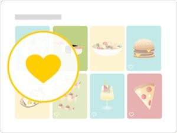

{{ paid.slice(0, 1) }}
{{ paid }}
Ideas
Create a new cookbook
You have not yet created your own cookbooks.
Create cookbooks to collect your favorite recipes.
Would you like to publish your own recipes on Kitchen Stories?
Now is the right time! Click below to upload your recipe and share it with the community!

Hey! You haven't distributed any hearts yet!
Do you like an article or recipe? Then tap on the heart icon. We save all your favorite treats here for you.